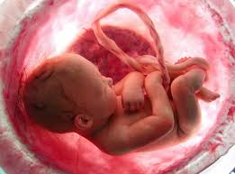
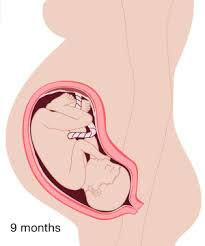

Third Trimester (Months 7 - 9)
Month 7

- The baby is able to use all it's senses. It's eyes are open, and is able to swallow.
- The baby now has a layer of fat.
- The stomach and intestines are functional.
- THe baby is much more energetic than before.
- The baby is about 15 inches long.
Month 8

- The baby now looks like a chubby newborn.
- The baby is sensitive to pain and has a sense of taste.
- The baby is about 1.5 feet long.
Month 9

- The baby is ready to be born. It is slowly dropping down into the mother's pelvis.
- The baby is still gaining weight and all of it's organs are mature, including it's lungs.
- The baby is about 19.5 inches long.